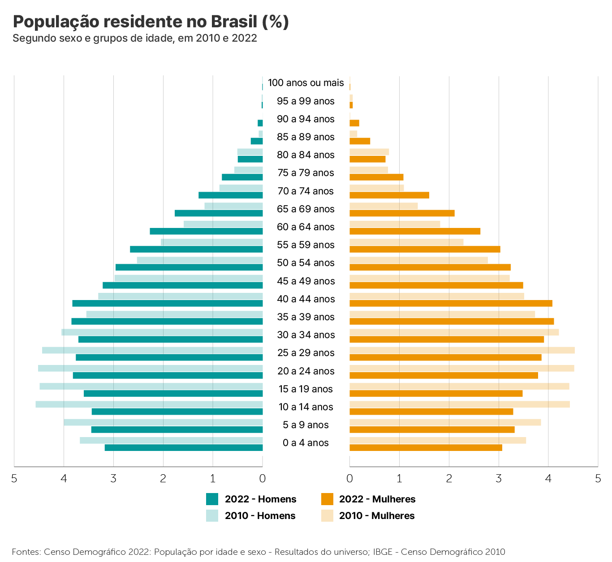
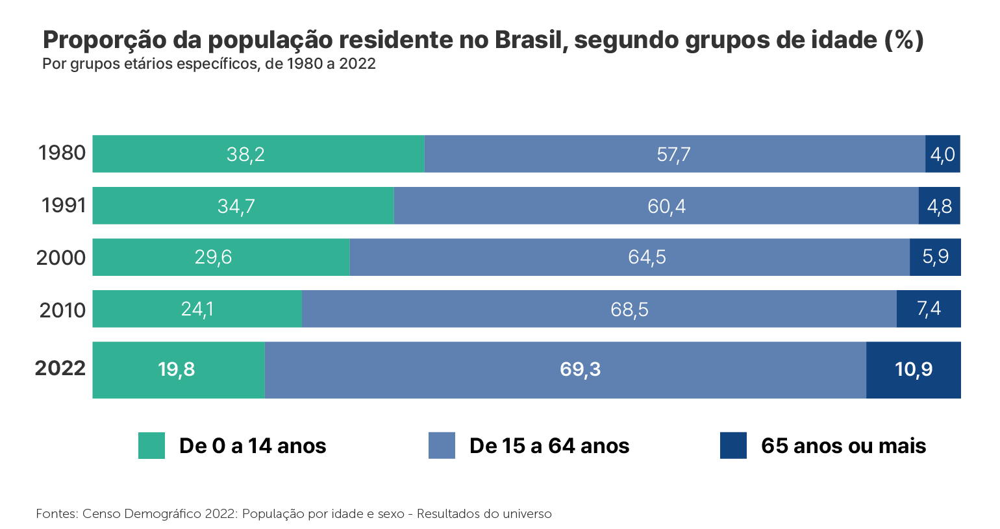
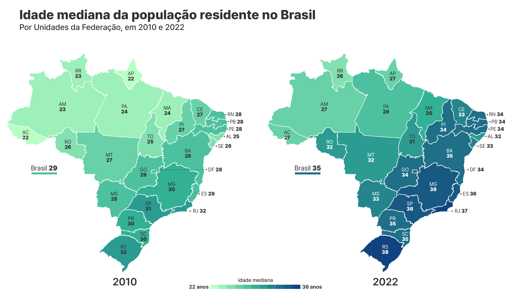

Conheça o Brasil - População
Pirâmide etária
Conforme os resultados do Censo Demográfico 2022, o número de pessoas com 65 anos ou mais de idade cresceu 57,4% na população do país em 12 anos. O total de pessoas dessa faixa etária chegou a cerca de 22,2 milhões de pessoas (10,9%) em 2022 contra 14 milhões (7,4%) em 2010.
Por outro lado, o total de crianças com até 14 anos de idade decresceu 12,6%, mudando de 45,9 milhões (24,1%) em 2010 para 40,1 milhões (19,8%) em 2022.

Em 1980, a população brasileira com 65 anos ou mais representava 4,0%. Em 2022, esse grupo atingiu 10,9%, o maior registro nos Censos Demográficos. Já a proporção de crianças com até 14 anos, que era de 38,2% em 1980, caiu para 19,8% em 2022.

Ao avaliar as proporções desses grupos etários específicos por grandes regiões, a região Norte é a mais jovem entre as demais, com 25,2% de sua população com até 14 anos, seguida pelo Nordeste, com 21,1%. O Sudeste e o Sul têm estruturas mais envelhecidas, com 18% e 18,2% de jovens de 0 a 14 anos, e 12,2% e 12,1% de pessoas com 65 anos ou mais, respectivamente.
A região Centro-Oeste apresenta uma estrutura intermediária, sendo a sua distribuição etária próxima da média do país.
A idade mediana divide uma população em 50% mais jovens e 50% mais velhos. No Brasil, de 2010 a 2022, a idade mediana aumentou de 29 para 35 anos, refletindo o envelhecimento da população. Nas cinco grandes regiões, houve crescimento: Norte (de 24 para 29 anos), Nordeste (de 27 para 33 anos), Sudeste (de 31 para 37 anos), Sul (de 31 para 36 anos) e Centro-Oeste (de 28 para 33 anos).
